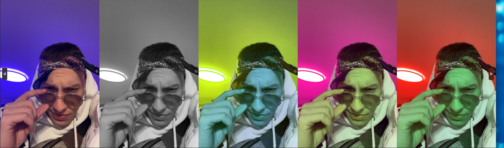

Vježbe

U prvoj vježbi je zadatak bio kreirati svoj font, služio sam se FontForge programom, s obzirom da sam program koristio prvi puta za vrijeme odrađivanje ove vježbe, zadovoljan sam rezultatima. Slova su crtana alatom "pen".
U drugoj vježbi smo radili s Bezierovom krivuljom te smo je ubacili u inicijale svog imena.
U trećoj vježbi smo koristili slike cvijeća te ih ubacili u Adobe Illustrator kako bi ih pretvorili u vektore.
U četvrtoj vježbi smo u Illustratoru kreirali svoju čašu.
U petoj vježbi smo u Dobe Photoshopu popravljali slike tako da smo micali šumove i oštećenja sa ove dvije slike.

U ovom zadatku smo morali raditi s bojama na slikama, u prvom dijelu zadatka trebali smo na već unaprijed pripremljenoj slici pojačati zelenu boju, a u drugom dijelu zadatka smo trebali ubaciti neku sovju sliku te je provući kroz nekoliko filtara gdje se raspored boja promijenio.
U ovom zadatku smo imali unaprijed pripremljene slike koje smo trebali uskladiti s pozadinom, ubaciti dodatne elemente, ja sam npr. dodao golubicu, ruksak i psa, uskladiti da boje budu slične da slika bude usklađena.
U ovom projektnom zadatku smo trebali odabrati pozadinu na kojoj smo željeli raditi, ubaciti elemente poput (na mojem radu): lampa, golub, ptica grabežljivica, konj, građevina, balon, te smo na kraju morali ubaciti neku sliku sebe. Trebalo je manipulirati bojama kako bi slika bila usklađena te je trebalo ubaciti sjene u rad.

U ovom zadatku smo trebali ubaciti video po želji u Adobe Premier, odabrati kraći dio tog videa te ga odvojiti sastrane za daljnje uređivanje, nakon toga trebali smo odabrati određeni isječak iz tog videa te ga otvoriti u Photoshopu, primjeniti masku na layeru te s Brush toolom označiti dio koji smo željeli ostaviti da se kreće, nakon toga smo otišli natrag u Premier ubacili sliku iz Photoshopa te je postavili na traku preko videa kako bi izolirali dijelove za koje nismo željeli da se kreću.
Kod ovog zadatka je bilo potrebno na drugačiji način nego što je prikazano u videu objašnjenja zadatka, izrezati video klipove, spojiti ih, maknuti originalan zvuk te ubaciti zadanu muziku ili neku svoju, dodati stacionaran tekst i jedan koji se kreće preko zaslona.